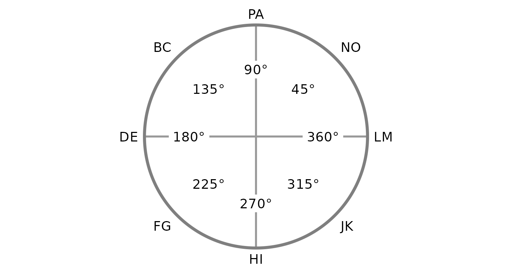
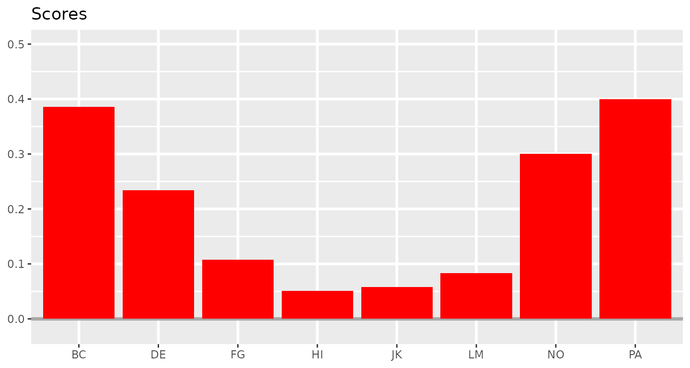
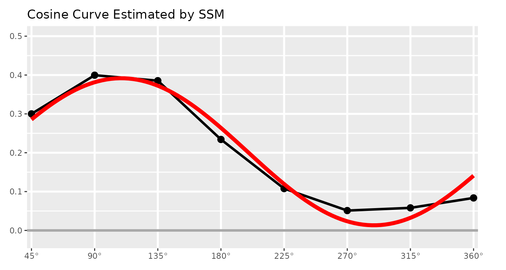
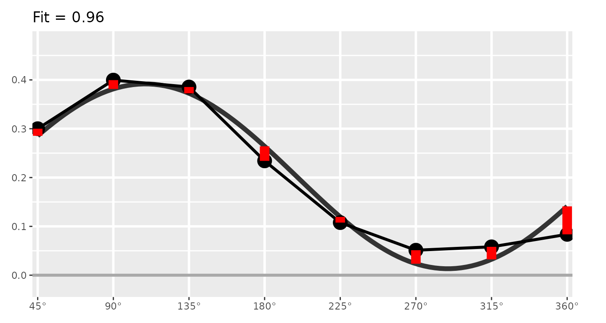
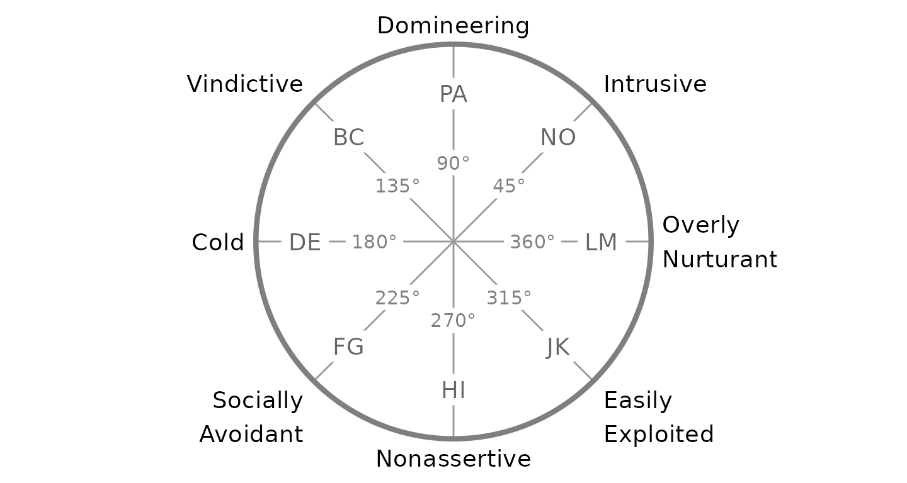
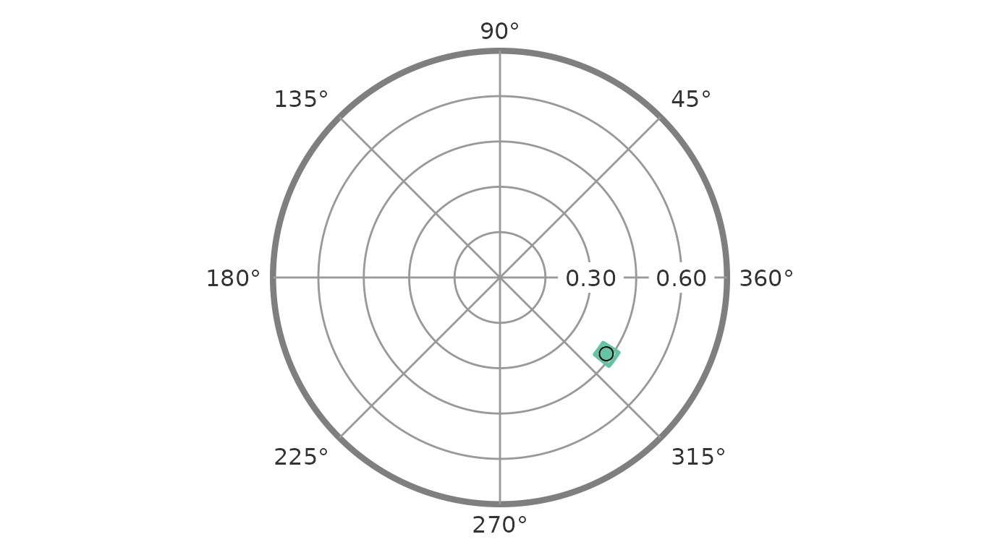
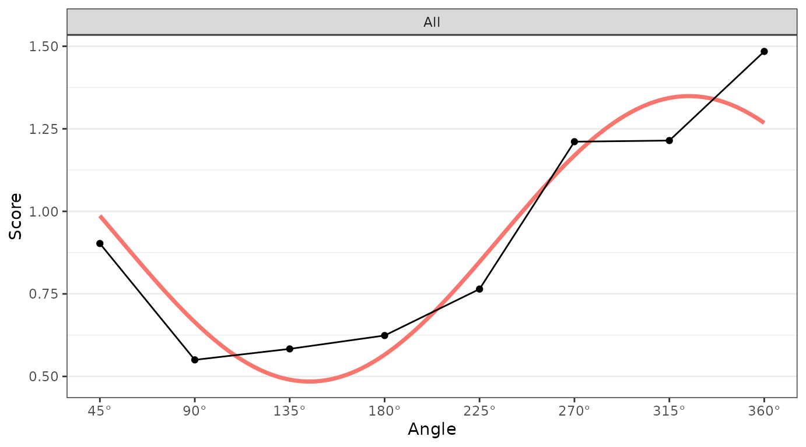

Introduction to SSM Analysis
Source:vignettes/introduction-to-ssm-analysis.Rmd
introduction-to-ssm-analysis.Rmd1. Background and Motivation
Circumplex models, scales, and data
Circumplex models are popular within many areas of psychology because they offer a parsimonious account of complex psychological domains, such as emotion and interpersonal functioning. This parsimony is achieved by understanding phenomena in a domain as being a “blend” of two primary dimensions. For instance, circumplex models of emotion typically represent affective phenomena as a blend of valence (pleasantness versus unpleasantness) and arousal (activity versus passivity), whereas circumplex models of interpersonal functioning typically represent interpersonal phenomena as a blend of communion (affiliation versus separation) and agency (dominance versus submissiveness). These models are often depicted as circles around the intersection of the two dimensions (see figure). Any given phenomenon can be located within this circular space through reference to the two underlying dimensions (e.g., anger is a blend of unpleasantness and activity).
Circumplex scales contain multiple subscales that attempt to measure different blends of the two primary dimensions (i.e., different parts of the circle). Although there have historically been circumplex scales with as many as sixteen subscales, it has become most common to use eight subscales: one for each “pole” of the two primary dimensions and one for each “quadrant” that combines the two dimensions. In order for a set of subscales to be considered circumplex, they must exhibit certain properties. Circumplex fit analyses can be used to quantify these properties.
Circumplex data is composed of scores on a set of circumplex scales for one or more participants (e.g., persons or organizations). Such data is usually collected via self-report, informant-report, or observational ratings in order to locate psychological phenomena within the circular space of the circumplex model. For example, a therapist might want to understand the interpersonal problems encountered by an individual patient, a social psychologist might want to understand the emotional experiences of a group of participants during an experiment, and a personality psychologist might want to understand what kind of interpersonal behaviors are associated with a trait (e.g., extraversion).
#> Warning: Using `size` aesthetic for lines was deprecated in ggplot2 3.4.0.
#> ℹ Please use `linewidth` instead.
#> This warning is displayed once every 8 hours.
#> Call `lifecycle::last_lifecycle_warnings()` to see where this warning was
#> generated.
The Structural Summary Method
The Structural Summary Method (SSM) is a technique for analyzing circumplex data that offers practical and interpretive benefits over alternative techniques. It consists of fitting a cosine curve to the data, which captures the pattern of correlations among scores associated with a circumplex scale (i.e., mean scores on circumplex scales or correlations between circumplex scales and an external measure). By plotting a set of example scores below, we can gain a visual intuition that a cosine curve makes sense in this case. First, we can examine the scores with a bar chart ignoring the circular relationship among them.
#> Warning: The `size` argument of `element_line()` is deprecated as of ggplot2 3.4.0.
#> ℹ Please use the `linewidth` argument instead.
#> This warning is displayed once every 8 hours.
#> Call `lifecycle::last_lifecycle_warnings()` to see where this warning was
#> generated.
Next, we can leverage the fact that these subscales have specific angular displacements in the circumplex model (and that 0 and 360 degrees are the same) to create a path diagram.

This already looks like a cosine curve, and we can finally use the SSM to estimate the parameters of the curve that best fits the observed data. By plotting it alongside the data, we can get a sense of how well the model fits our example data.

Understanding the SSM parameters
The SSM estimates a cosine curve to the data using the following equation: \[S_i = e + a \times \cos(\theta_i - d)\] where \(S_i\) and \(\theta_i\) are the score and angle on scale \(i\), respectively, and \(e\), \(a\), and \(d\) are the elevation, amplitude, and displacement parameters, respectively. Before we discuss these parameters, however, we can also estimate the fit of the SSM model. This is essentially how close the cosine curve is to the observed data points. Deviations (in red, below) will lower model fit.

If fit is less than 0.70, it is considered “unacceptable” and only the elevation parameter should be interpreted. If fit is between 0.70 and 0.80, it is considered “adequate,” and if it is greater than 0.80, it is considered “good.” Sometimes SSM model fit is called prototypicality or denoted using \(R^2\).
The first SSM parameter is elevation or \(e\), which is calculated as the mean of all scores. It is the size of the general factor in the circumplex model and its interpretation varies from scale to scale. For measures of interpersonal problems, it is interpreted as generalized interpersonal distress. When using correlation-based SSM, \(|e|\ge.15\) is considered “marked” and \(|e|<.15\) is considered “modest.”

The second SSM parameter is amplitude or \(a\), which is calculated as the difference between the highest point of the curve and the curve’s mean. It is interpreted as the distinctiveness or differentiation of a profile: how much it is peaked versus flat. Similar to elevation, when using correlation-based SSM, \(a\ge.15\) is considered “marked” and \(a<.15\) is considered “modest.”

The final SSM parameter is displacement or \(d\), which is calculated as the angle at which the curve reaches its highest point. It is interpreted as the style of the profile. For instance, if \(d=90^\circ\) and we are using a circumplex scale that defines 90 degrees as “domineering,” then the profile’s style is domineering.

By interpreting these three parameters, we can understand a profile much more parsimoniously than by trying to interpret all eight subscales individually. This approach also leverages the circumplex relationship (i.e., dependency) among subscales. It is also possible to transform the amplitude and displacement parameters into estimates of distance from the x-axis and y-axis, which will be shown in the output discussed below.
2. Example data: jz2017
To illustrate the SSM functions, we will use the example dataset
jz2017, which was provided by Zimmermann & Wright
(2017) and reformatted for this package. This dataset includes
self-report data from 1166 undergraduate students. Students completed a
circumplex measure of interpersonal problems with eight subscales (PA,
BC, DE, FG, HI, JK, LM, and NO) and a measure of personality disorder
symptoms with ten subscales (PARPD, SCZPD, SZTPD, ASPD, BORPD, HISPD,
NARPD, AVPD, DPNPD, and OCPD). More information about these variables
can be accessed using the ?jz2017 command in R.
data("jz2017")
print(jz2017)
#> # A tibble: 1,166 × 19
#> Gender PA BC DE FG HI JK LM NO PARPD SCZPD SZTPD
#> <fct> <dbl> <dbl> <dbl> <dbl> <dbl> <dbl> <dbl> <dbl> <int> <int> <int>
#> 1 Female 1.5 1.5 1.25 1 2 2.5 2.25 2.5 4 3 7
#> 2 Female 0 0.25 0 0.25 1.25 1.75 2.25 2.25 1 0 2
#> 3 Female 0 0 0 0 0 0 0 0 0 1 0
#> 4 Male 2 1.75 1.75 2.5 2 1.75 2 2.5 1 0 0
#> 5 Female 0.25 0.5 0.25 0 0 0 0 0 0 0 0
#> 6 Male 1.5 1.75 2.25 1.75 2 1.25 2.25 2.5 5 5 7
#> 7 Male 2 1.75 1.75 2 1.5 1.25 1.25 1.75 3 6 7
#> 8 Female 0 0.25 0.25 0.25 1 1.25 1.25 1 0 0 1
#> 9 Female 0 0 0 0 0.25 0.25 1 0 0 1 0
#> 10 Male 0.75 2 1.75 2.5 2 1.5 2 2.25 4 5 5
#> # ℹ 1,156 more rows
#> # ℹ 7 more variables: ASPD <int>, BORPD <int>, HISPD <int>, NARPD <int>,
#> # AVPD <int>, DPNPD <int>, OCPD <int>The circumplex scales in jz2017 come from the Inventory
of Interpersonal Problems - Short Circumplex (IIP-SC). These scales can
be arranged into the following circular model, which is organized around
the two primary dimensions of agency (y-axis) and communion (x-axis).
Note that the two-letter scale abbreviations and angular values are
based in convention. A high score on PA indicates that one has
interpersonal problems related to being “domineering” or too high on
agency, whereas a high score on DE indicates problems related to being
“cold” or too low on communion. Scales that are not directly on the
y-axis or x-axis (i.e., BC, FG, JK, and NO) represent blends of agency
and communion.

3. Mean-based SSM Analysis
Conducting SSM for a group’s mean scores
To begin, let’s say that we want to use the SSM to describe the
interpersonal problems of the average individual in the entire dataset.
Although it is possible to analyze the raw scores contained in
jz2017, our results will be more interpretable if we
standardize the scores first. We can do this using the
standardize() function. The first argument to this function
is .data, a data frame frame containing the circumplex
scales to be standardized. The second argument is scales
and specifies where in .data the circumplex scales are
(either in terms of their variable names or their column numbers). The
third argument is angles and specifies the angle of each of
the circumplex scales included in scales. Note that the
scales and angles arguments need to be vectors
(hence the c() function) that have the same ordering and
length. Finally, the fourth argument is norms, a data frame
containing the normative data we will use to standardize the circumplex
scales. Here, we will use normative data for the IIP-SC by loading the
iipsc data frame.
data("iipsc")
jz2017s <- standardize(
.data = jz2017,
scales = c(PA, BC, DE, FG, HI, JK, LM, NO),
angles = c(90, 135, 180, 225, 270, 315, 360, 45),
instrument = iipsc,
sample = 1
)
print(jz2017s)
#> # A tibble: 1,166 × 27
#> Gender PA BC DE FG HI JK LM NO PARPD SCZPD SZTPD
#> <fct> <dbl> <dbl> <dbl> <dbl> <dbl> <dbl> <dbl> <dbl> <int> <int> <int>
#> 1 Female 1.5 1.5 1.25 1 2 2.5 2.25 2.5 4 3 7
#> 2 Female 0 0.25 0 0.25 1.25 1.75 2.25 2.25 1 0 2
#> 3 Female 0 0 0 0 0 0 0 0 0 1 0
#> 4 Male 2 1.75 1.75 2.5 2 1.75 2 2.5 1 0 0
#> 5 Female 0.25 0.5 0.25 0 0 0 0 0 0 0 0
#> 6 Male 1.5 1.75 2.25 1.75 2 1.25 2.25 2.5 5 5 7
#> 7 Male 2 1.75 1.75 2 1.5 1.25 1.25 1.75 3 6 7
#> 8 Female 0 0.25 0.25 0.25 1 1.25 1.25 1 0 0 1
#> 9 Female 0 0 0 0 0.25 0.25 1 0 0 1 0
#> 10 Male 0.75 2 1.75 2.5 2 1.5 2 2.25 4 5 5
#> # ℹ 1,156 more rows
#> # ℹ 15 more variables: ASPD <int>, BORPD <int>, HISPD <int>, NARPD <int>,
#> # AVPD <int>, DPNPD <int>, OCPD <int>, PA_z <dbl>, BC_z <dbl>, DE_z <dbl>,
#> # FG_z <dbl>, HI_z <dbl>, JK_z <dbl>, LM_z <dbl>, NO_z <dbl>Now we can use the ssm_analyze() function to perform the
SSM analysis. The first three arguments are the same as the first three
arguments to standardize(). We can pass the new
jz2017s data frame that contains standardized scores as
.data and the same vectors to scales and
angles since these haven’t changed.
results <- ssm_analyze(
.data = jz2017s,
scales = c(PA_z, BC_z, DE_z, FG_z, HI_z, JK_z, LM_z, NO_z),
angles = c(90, 135, 180, 225, 270, 315, 360, 45)
)The output of the function has been saved in the results
object, which we can examine in detail using the summary()
function. This will output the call we made to create the output, as
well as some of the default options that we didn’t bother changing (see
?ssm_analyze to learn how to change them) and, most
importantly, the estimated SSM parameter values with bootstrapped
confidence intervals.
summary(results)
#> Call:
#> ssm_analyze(.data = jz2017s, scales = c(PA_z, BC_z, DE_z, FG_z,
#> HI_z, JK_z, LM_z, NO_z), angles = c(90, 135, 180, 225, 270,
#> 315, 360, 45))
#>
#> Statistical Basis: Mean Scores
#> Bootstrap Resamples: 2000
#> Confidence Level: 0.95
#> Listwise Deletion: TRUE
#> Scale Displacements: 90 135 180 225 270 315 360 45
#>
#> Profile [All]:
#> Estimate Lower CI Upper CI
#> Elevation -0.225 -0.258 -0.191
#> X-Value 0.131 0.097 0.161
#> Y-Value -0.015 -0.048 0.020
#> Amplitude 0.131 0.098 0.165
#> Displacement 353.525 339.484 9.564
#> Model Fit 0.710That was pretty easy! We can now write up these results. However, the
circumplex package has some features that can make what we
just did even easier. First, because the first three arguments of the
ssm_analyze() function are always the same, we can omit
their names. Second, because we organized the jz2017s data
frame to have the circumplex scale variables adjacent and in order from
PA to NO, we can simplify their specification by using the
PA:NO shortcut. Finally, because the use of octant scales
is so common, the circumplex package comes with a
convenience function for outputting their angular displacements:
octants(). Note how, even when using these shortcuts, the
results are the same except for minor stochastic differences in the
confidence intervals due to the randomness inherent to bootstrapping.
(To get the exact same results, we could use the set.seed()
function to control the random number generator in R.)
results2 <- ssm_analyze(jz2017s, PA_z:NO_z, octants())
summary(results2)
#> Call:
#> ssm_analyze(.data = jz2017s, scales = PA_z:NO_z, angles = octants())
#>
#> Statistical Basis: Mean Scores
#> Bootstrap Resamples: 2000
#> Confidence Level: 0.95
#> Listwise Deletion: TRUE
#> Scale Displacements: 90 135 180 225 270 315 360 45
#>
#> Profile [All]:
#> Estimate Lower CI Upper CI
#> Elevation -0.225 -0.259 -0.192
#> X-Value 0.131 0.100 0.165
#> Y-Value -0.015 -0.050 0.019
#> Amplitude 0.131 0.101 0.167
#> Displacement 353.525 339.560 8.994
#> Model Fit 0.710Visualizing the results with a table and figure
Next, we can produce a table to display our results. With only a
single set of parameters, this table is probably overkill, but in future
analyses we will see how this function saves a lot of time and effort.
To create the table, simply pass the results (or
results2) object to the ssm_table()
function.
ssm_table(results2)| Profile | Elevation | X-Value | Y-Value | Amplitude | Displacement | Fit |
|---|---|---|---|---|---|---|
| All | -0.23 (-0.26, -0.19) | 0.13 (0.10, 0.17) | -0.01 (-0.05, 0.02) | 0.13 (0.10, 0.17) | 353.5 (339.6, 9.0) | 0.710 |
Next, let’s leverage the fact that we are working within a circumplex
space by creating a nice-looking circular plot by mapping the amplitude
parameter to the points’ distance from the center of the circle and the
displacement parameter to the points’ rotation from due-east (as is
conventional). This, again, is as simple as passing the
results object to the ssm_plot() function.
ssm_plot(results2)
4. Correlation-based SSM Analysis
Conducting SSM for a group’s correlations with an external measure
Next, let’s say that we are interested in analyzing not the mean scores on the circumplex scales but rather their correlations with an external measure. This is sometimes referred to as “projecting” that external measure into the circumplex space. As an example, let’s project the NARPD variable, which captures symptoms of narcissistic personality disorder, into the circumplex space defined by the IIP-SC. Based on theory and previous findings, we can expect this measure to be associated with some general interpersonal distress and a style that is generally high in agency.
To conduct this analysis, we can start with the syntax from the
mean-based analysis. All SSM analyses use the ssm_analyze()
function and the data, scales, and angles are the same as before.
However, we also need to let the function know that we want to analyze
correlations with NARPD as opposed to scale means. To do this, we add an
additional argument measures. Note that since correlations
are already standardized, we don’t need to worry about standardizing the
circumplex scales when measures is used.
results3 <- ssm_analyze(jz2017, PA:NO, octants(), measures = NARPD)
summary(results3)
#> Call:
#> ssm_analyze(.data = jz2017, scales = PA:NO, angles = octants(),
#> measures = NARPD)
#>
#> Statistical Basis: Correlation Scores
#> Bootstrap Resamples: 2000
#> Confidence Level: 0.95
#> Listwise Deletion: TRUE
#> Scale Displacements: 90 135 180 225 270 315 360 45
#>
#> Profile [NARPD]:
#> Estimate Lower CI Upper CI
#> Elevation 0.202 0.170 0.237
#> X-Value -0.062 -0.096 -0.028
#> Y-Value 0.179 0.144 0.211
#> Amplitude 0.189 0.155 0.224
#> Displacement 108.967 98.720 118.827
#> Model Fit 0.957Note that this output looks very similar to the mean-based output except that the statistical basis is now correlation scores instead of mean scores and instead of saying “Profile [All]” it now says “Profile [NARPD]”.
Visualizing the results with a table and figure
We can also create a similar table and figure using the exact same
syntax as before. The ssm_table() and
ssm_plot() functions are smart enough to know whether the
results are mean-based or correlation-based and will work in both
cases.
ssm_table(results3)| Profile | Elevation | X-Value | Y-Value | Amplitude | Displacement | Fit |
|---|---|---|---|---|---|---|
| NARPD | 0.20 (0.17, 0.24) | -0.06 (-0.10, -0.03) | 0.18 (0.14, 0.21) | 0.19 (0.16, 0.22) | 109.0 (98.7, 118.8) | 0.957 |
From the table, we can see that the model fit is good (>.80) and that all three SSM parameters are significantly different from zero, i.e., their confidence intervals do not include zero. Furthermore, the confidence intervals for the elevation and amplitude parameters are greater than or equal to 0.15, which can be interpreted as being “marked.” So, consistent with our hypotheses, NARPD was associated with marked general interpersonal distress (elevation) and was markedly distinctive in its profile (amplitude). The displacement parameter was somewhere between 100 and 120 degrees; to interpret this we would need to either consult the mapping between scales and angles or plot the results.
ssm_plot(results3)
From this figure, it is very easy to see that, consistent with our hypotheses, the displacement for NARPD was associated with high agency and was somewhere between the “domineering” and “vindictive” octants.
5. Wrap-up
In this vignette, we learned about circumplex models, scales, and
data as well as the Structural Summary Method (SSM) for analyzing such
data. We learned about the circumplex package and how to
use the ssm_analyze() function to generate SSM results for
a single group’s mean scores and for correlations with a single external
measure. We learned several shortcuts for making calls to this function
easier and then explored the basics of SSM visualization by creating
simple tables and circular plots. In the next vignette, “Intermediate
SSM Analysis”, we will build upon this knowledge to learn how to (1)
generalize our analyses to multiple groups and multiple measures, (2)
perform contrast analyses to compare groups or measures, and (3) export
and make basic changes to tables and figures.
References
Gurtman, M. B. (1992). Construct validity of interpersonal personality measures: The interpersonal circumplex as a nomological net. Journal of Personality and Social Psychology, 63(1), 105–118.
Gurtman, M. B., & Pincus, A. L. (2003). The circumplex model: Methods and research applications. In J. A. Schinka & W. F. Velicer (Eds.), Handbook of psychology. Volume 2: Research methods in psychology (pp. 407–428). Hoboken, NJ: John Wiley & Sons, Inc.
Wright, A. G. C., Pincus, A. L., Conroy, D. E., & Hilsenroth, M. J. (2009). Integrating methods to optimize circumplex description and comparison of groups. Journal of Personality Assessment, 91(4), 311–322.
Zimmermann, J., & Wright, A. G. C. (2017). Beyond description in interpersonal construct validation: Methodological advances in the circumplex Structural Summary Approach. Assessment, 24(1), 3–23.